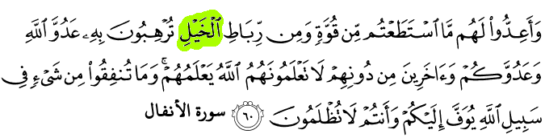
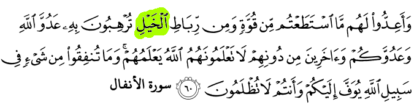
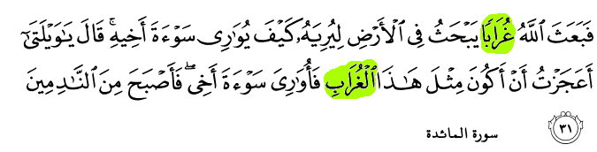

التفسير الميسر
وأعدُّوا - يا معشر المسلمين - لمواجهة أعدائكم كل ما تقدرون عليه مِن عدد وعدة, لتُدْخلوا بذلك الرهبة في قلوب أعداء الله وأعدائكم المتربصين بكم, وتخيفوا آخرين لا تظهر لكم عداوتهم الآن, لكن الله يعلمهم ويعلم ما يضمرونه. وما تبذلوا من مال وغيره في سبيل الله قليلا أو كثيرًا يخلفه الله عليكم في الدنيا, ويدخر لكم ثوابه إلى يوم القيامة, وأنتم لا تُنْقصون من أجر ذلك شيئًا.
English
And make ready against them all you can of power, including steeds of war (tanks, planes, missiles, artillery) to threaten the enemy of Allâh and your enemy, and others besides whom, you may not know but whom Allâh does know. And whatever you shall spend in the Cause of Allâh shall be repaid unto you, and you shall not be treated unjustly.
Indonesian
Dan siapkanlah untuk menghadapi mereka kekuatan apa saja yang kamu sanggupi dan dari kuda-kuda yang ditambat untuk berperang (yang dengan persiapan itu) kamu menggentarkan musuh Allah, musuhmu dan orang-orang selain mereka yang kamu tidak mengetahuinya; sedang Allah mengetahuinya. Apa saja yang kamu nafkahkan pada jalan Allah niscaya akan dibalas dengan cukup kepadamu dan kamu tidak akan dianiaya (dirugikan).
التفسير الميسر
وخلق لكم الخيل والبغال والحمير; لكي تركبوها, ولتكون جمَالا لكم ومنظرًا حسنًا; ويخلق لكم من وسائل الركوب وغيرها ما لا عِلْمَ لكم به; لتزدادوا إيمانًا به وشكرا له
English
And (He has created) horses, mules and donkeys, for you to ride and as an adornment. And He creates (other) things of which you have no knowledge
Indonesian
dan (Dia telah menciptakan) kuda, bagal (1) dan keledai, agar kamu menungganginya dan (menjadikannya) perhiasan. Dan Allah menciptakan apa yang kamu tidak mengetahuinya
(1) Bagal yaitu peranakan kuda dengan keledai

التفسير الميسر
لما قتل قابيلُ أخاه لم يعرف ما يصنع بجسده, فأرسل الله غرابًا يحفر حفرةً في الأرض ليدفن فيها غرابًا مَيِّتًا; ليدل قابيل كيف يدفن جُثمان أخيه؟ فتعجَّب قابيل, وقال: أعجزتُ أن أصنع مثل صنيع هذا الغراب فأستُرَ عورة أخي؟ فدَفَنَ قابيل أخاه, فعاقبه الله بالندامة بعد أن رجع بالخسران
English
Then Allâh sent a crow who scratched the ground to show him to hide the dead body of his brother. He (the murderer) said: "Woe to me! Am I not even able to be as this crow and to hide the dead body of my brother?" Then he became one of those who regretted
Indonesian
Kemudian Allah menyuruh seekor burung gagak menggali-gali di bumi untuk memperlihatkan kepadanya (Kabil) bagaimana dia seharusnya menguburkan mayat saudaranya (1). Berkata Qabil: "Aduhai celaka aku, mengapa aku tidak mampu berbuat seperti burung gagak ini, lalu aku dapat menguburkan mayat saudaraku ini?" Karena itu jadilah dia seorang di antara orang-orang yang menyesal
(1) Dipahami dari ayat ini bahwa manusia banyak pula mengambil pelajaran dari alam dan jangan segan-segan mengambil pelajaran dari yang lebih rendah tingkatan pengetahuannya